Chapter 3: Psychiatric History Taking & Mental Status Examination
|
"The secret of the care of the patient is in caring for the patient." - Francis Peabody, M.D. (1881-1927) |
1. Introduction
2. Interview Techniques
3. Rapport, Empathy, Transference and Counter-transference
4. Flow of the psychiatric interview
5. Psychiatric History - What information needs to be collected
6. SDL and review for History taking
7. Mental Status Examination
8. SDL and review of mental status examination
1. Introduction
The psychiatric assessment is different from a medical or surgical assessment in that: (1) the history taking is often longer and requires understanding each patient’s unique background and environment; (2) a mental state examination (MSE) is performed; and (3) the assessment can in itself be therapeutic. Fig. 1.1 provides an outline of the psychiatric assessment, which includes a psychiatric history, MSE, risk assessment, physical examination and formulation.
|
|

2. Interview Techniques
|
|
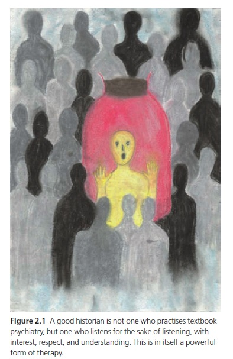 |
|
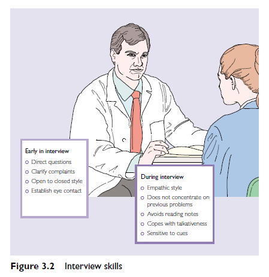 |
3. Rapport, Empathy, Transference and Countertransference
|
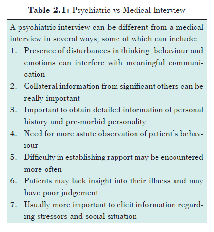 |
4. Flow of the Psychiatric interview
1. Establish rapport
Establish rapport and maintain it throughout.
First impressions count. Within the first minute, or even the first few seconds, the pt generally forms an impression about you. If the pt sees you as benevolent and trustworthy, all may be well; if not, the pt's attitude may be less than cooperative, and the data gathered in the interview may be unreliable.
If you are a medical student, introduce yourself as such, or as a student doctor, but not as a doctor. Thus: “Hi, Maheshbhai, I'm Samir. I'm the medical student working with the Dept. of Psychiatry and I'd like to talk with you and ask a few questions. Would that be O.K.?”
2. Establishing the chief complaint
The chief complaint (CC) is the epitome of the pt's illness and must be clearly established at the start of the interview, or the interview will lack proper focus and may fail to provide the necessary dx information.
Open the interview with a request for the CC: “I'd like to start by asking you what led to your coming to the hospital” (or “making the appointment to come here today”). Don't begin with an invitation to digress, such as, “Tell me about yourself,” or “What kind of problems have you been having?”
Occasionally, pts are unable to provide a CC. Delirious, demented, or floridly psychotic pts may lack the ability to articulate one, and other pts (eg, suspicious pts with delusions of persecution) may distrust the physician and simply be unwilling to offer a CC. Probing for the CC should remain gentle. If the pt starts becoming annoyed, change the subject, and hope that the CC may “leak out” later in the interview.
If you're unable to establish a CC, proceed to the directive portion of the interview, and plan on securing the CC during your conversation with collateral sources.
3. Conducting the Non-directive Portion of the Interview
As soon as a CC is established, adopt a non-directive approach that invites the pt to relate the hx behind the CC: “He put poison in the coffee? Tell me more about that.” Most pts, with only gentle probing, will subsequently touch on the basic elements of the hx: the onset of the illness (including approximate date, mode of onset [acute, gradual, insidious], and any precipitating factors); the evolution of signs and symptoms; any aggravating or alleviating factors; any treatment efforts and their results; pertinent positives and negatives; and any hx of similar sx in the past. Use interview techniques to facilitate story telling - Open ended questions, Listening, Continuation and Redirection.
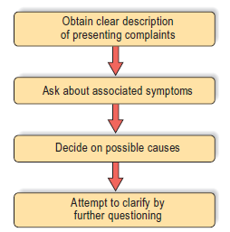
Figure: Generating Hypothesis while collecting HPI
4. Conducting the Directive Portion of the Interview
Introduce the directive portion of the interview: “Now I'd like to ask you some routine questions about any other health problems you may have had.” Direct questions are generally more closed-ended and deal with medications, allergies, the past medical history (PMH), review of systems (ROS), family history (fhx), and the mental status examination (MSE). Pertinent positive responses should generally be followed by open-ended probes to flush out the important details.
The MSE is saved for last, and those items evident to inspection, or that were already covered, need not be covered again - usually mood, delusions, hallucinations, cognition, insight and judgement. Introduce the cognitive portion of the MSE with a statement like, “Now I'd like to ask you some routine questions to check on memory, arithmetic, and things like that.”
5. Concluding the Interview
Conclude the interview with appropriate comments about dx impression, proposed rx, and probable length of stay etc. (Video demonstrating referring a patient to a specialist)
|
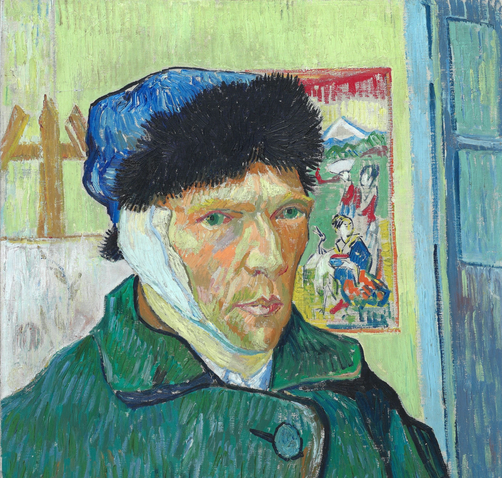 World Most Famous Severed Ear Click here to read further about "Your First Patient a 35 year old male" |
5. Psychiatric History
|
|

Click here to download history taking proforma.
5.1 Identifying information
- Name
- Age
- Marital status
- Occupation
- Reason for the patient’s presence in a psychiatric setting and informants from whom history is taken
- (e.g. referral to out-patient clinic by family doctor, admitted to ward informally having presented at casualty)
- Legal status (i.e. if detained under mental health legislation)
e.g. Mrs LM is a 32-year-old married housewife referred by her family doctor to a psychiatric out-patient clinic.
5.2 Presenting complaint
- Open ended questions - How can we help you? Why have you come for this visit today?
- Record the main problems in the patient’s own words, in one or two sentences, instead of using technical psychiatric terms. e.g. Mrs LM complains of ‘mane khabar nathi ke hoon kon chu, hoon andar thi ekdam khali thai gayi chu'
- If there are more than one complaint then it may help to organize multiple presenting complaints into groups of symptoms that are related e.g. Mrs LM complaints of feeling sad, difficulty sleeping and low self esteem since 2 weeks.
- Sometimes it is not possible to organize symptoms into a group of related symptoms. In that care just write the chief complaint as the presenting complaint and describe the rest in the HPI section.
5.3 HPI (History of present illness)
This is by far the most important section of the history taking. This section is concerned with eliciting the nature and development of each of the presenting complaints. The following headings may be helpful in structuring your questioning:
- Duration: when did the problems start?
- Development: how did the problems develop?
- Mode of onset: suddenly, or over a period of time?
- Course: are symptoms constant, progressively worsening or intermittent?
- Severity: how much is the patient suffering? To what extent are symptoms affecting the patient’s social and occupational functioning?
- Associated symptoms: certain complaints are associated with clusters of other symptoms that should be enquired about if patients do not mention them spontaneously. This is the same approach as in other specialities; for example, enquiring about nausea, diarrhoea and distension when someone reports abdominal pain. When ‘feeling low’ is a presenting complaint, biological, cognitive and psychotic features of depression, as well as suicidal ideation, should be asked about. Vegetative symptoms may be asked for in all cases.
- Precipitating factors: psychosocial stress frequently precipitates episodes of mental illness (e.g. bereavement, moving house and relationship difficulties).
- Any treatment taken and its effects
- ICE - Ideas, Concerns and Expectations
- Psychiatric review of systems: You can also ask about symptom clusters for psychosis, anxiety, eating problems, substance use and cognitive problems, among others. DAMP DESPOT DADS
|
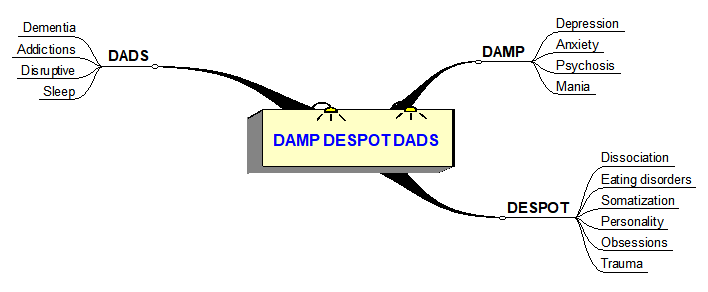 |
Another way to assess the HPI is to use to NOTEPAD mnemonic
- Nature of problem - description of the current problems likes worry, mood, delusion, hallucinations, physical ailment or social problem
- Onset
- Triggers
- Exacerbating / Relieving factors
- Progression (improving, worsening, staying the same; intermittent or continuous)
- Associated symptoms
- Disability (Effect on life)
+ treatment, ICE and psych ROS as described above
Collateral history - that is corroborative history from reliable informants on the above is essential. (Video demonstrating talking to patient to involve family members in their care)
|
Common presentations encountered in Clinical practice
|
5.4 Past psychiatric history
- Previous or ongoing psychiatric diagnoses
- Dates and duration of previous mental illness episodes
- Previous treatments, including medication, psychotherapy and electroconvulsive therapy
- Previous contact with psychiatric services (e.g. referrals, admissions)
- Previous assessment or treatment under mental health legislation
- History of self-harm, suicidal ideas or acts
5.5 Family history
Enquire about the presence of psychiatric illness (including suicide and substance abuse) in family members, remembering that genetic factors are implicated in the etiology of many psychiatric conditions. A family tree may be useful to summarize information.

5.6 Past medical history and Systems review
Enquire about medical illnesses or surgical procedures. Past head injury or surgery, neurological conditions (e.g. epilepsy) and endocrine abnormalities (e.g. thyroid problems) are especially relevant to psychiatry. Also ask about current medications and drug allergies. Use the body locus method for remembering the systemic review of systems. link
|
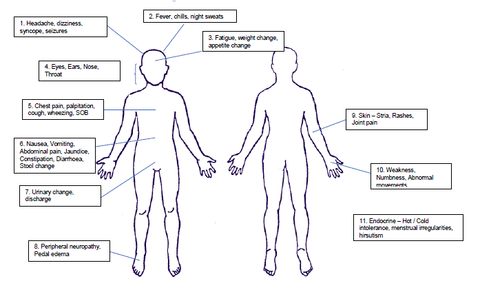 |
5.7 Substance history
This section should never be overlooked, as alcohol/substance-related psychiatric conditions are very common. The CAGE questionnaire is a useful tool to screen for alcohol dependence. If a patient answers affirmatively to two or more questions, regard the screen as positive and go on to check if they meet criteria for alcohol dependence syndrome:
- When started?
- Current use - what, where, when, who, tried to stop?
- Biological dependence - get shakes when not drink; drink more than you used to, to get same effect?
- Psychological dependence - Compulsion to drink; how important is drinking for you; If you stop drinking do you notice that you feel down, angry, anxious?
- Effects - How has alcohol impacted your relationships, ability to work, any alcohol rel. crimes
- Health - Diet, ALD, UGI bleeding, Black colored stool, Pancreatitis, Cardiomyopathy
If recreational drugs have been or are being used, record the drug names, routes of administration (intravenous, inhaled, oral ingestion) and the years and frequency of use. Also enquire about possible dependence.
5.8 Personal history
Achieved developmental milestones on time, friends in school, history of trauma or abuse, performance academically. Also include income source, employment, education, place of residence, who they live with, number of children, support system, religious affiliation and beliefs, legal history.
5.9 Premorbid personality
Premorbid personality is an indication of the patient’s personality and character before the onset of mental illness. Patients may be asked directly about their personality before they became ill, or it may be useful to ask a close family member or friend about a patient’s premorbid personality. e.g. ‘How would people have described you before?’
6. Self directed learning and review for History taking
1. ADMSEP self directed learning module on "The Psychiatric Interview" link
2. NIMHANS digital academy History taking Part - 1 (09:18min)
3. NIMHANS digital academy History taking Part - 2 (07:43min)
7. Mental Status Examination
MSE complements the psychiatric history by providing a cross-sectional, systematic documentation of all the patient’s symptoms and signs during the intreview.
|
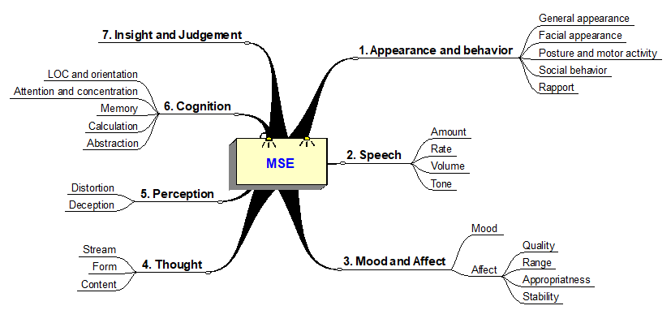 |
The MSE is divided into seven sections: 1. appearance and behaviour, 2. speech, 3. mood and affect, 4. thoughts form and content, 5. perception, 6. cognition, 7. insight and judgement
7.1 Appearance and behavior
|
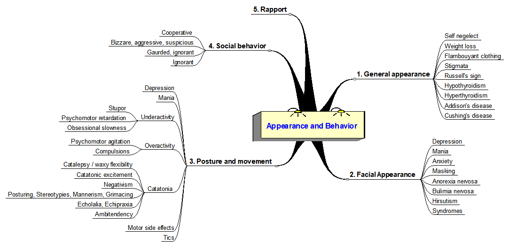 |
Appearance and Behaviour is described in 5 headings
- General appearance - based on general condition, attire, grooming, hygiene, stigmata
- Self neglect - Evident as a lack of cleanliness in self-care; unkempt hair and wearing clothes that have not been looked after. Consistent with Schizophrenia, Mood disorder, Substance use, Dementia
- Weight loss - Evident as loss fitting clothes. May be seen in carcinoma or psychiatric disorder such as depression
- Flamboyant clothing - Mania
- Stigmata - Conditions like jaundice, epilepsy, injury
- Russell's sign - presence of calluses on the dorsum of the hands may be consistent with a diagnosis of bulimia nervosa
- Hypothyroidism - dry, thin hair; dry skin; loss of eyebrows; periorbital oedema; goitre; anaemia; myxoedema
- Hyperthyroidism - Exophthalmos, Lid lag, tremors, weight loss, loiter
- Addison's disease - Hyperpigmentation of palmar crease, buccal pigmentation
- Cushing's disease - Moon face, buffalo hump, easy bruising, obesity
- Facial appearance
- Depression - Downward gaze, vertical furrows on the forehead, downturned corners of the mouth
- Mania - Euphoric or irritable
- Anxiety - Raised eyebrows, widened eyes, horizontal furrows on the forehead
- Masked face - Parkinson disease, drug induced parkinsonism
- Anorexia nervosa - lanugo hair
- Bulimia nervosa - parotid gland swelling
- Hirsutism - in women may be normal variant, PCOD, hyperadrenalism
- Congenital syndromes - downs, fragile X
- Posture and movements
- Depression - Stopped posture, downward gaze, hunched shoulders
- Mania - increased movements, unable to sit still. Restlessness may also be seen in anxiety states or hyperthyroidism.
- Underactivity
- Stupor - Pt is akinetic mute but conscious. (It is known that the patient is fully conscious because sometimes the eyes, which are often open, may follow objects. Moreover, following the episode of stupor the patient may be able to remember events that took place during it.) The condition may sometimes alternate with periods of excitement and overactivity. Stupor is seen in the following conditions: Catatonic stupor, Depressive stupor, Manic stupor, Epilepsy, Hysteria.
- Psychomotor retardation - slowing of thoughts and movements seen in depression
- Obsessional slowness - slowed movements that may be secondary to repeated doubts and compulsive rituals.
- Overactivity
- Psychomotor agitation - excessive activity that is unproductive
- Hyperkinesis - overactivity driven by impulsivity seen in children with ADHD
- Compulsions - repetitive and stereotyped seemingly purposeful behaviour whcih is the motor component of obsessional thought
- Catatonia - This is a motor syndrome associated with various conditions, including psychotic disorders and affective disorders. It has become less common since the introduction of antipsychotic medication. Catatonia is present if at least two of the five features described in Table below are prominent.
|
Feature |
Description |
|
Motor immobility |
Stupor or Catalepsy (waxy flexibility or flexibilitas cerea): the patient's limbs can be manipulated into any posture, after which they are maintained for an unusually long period of time |
|
Motor excitement |
Seemingly purposeless and not driven by any external stimuli |
|
Negativism |
Seemingly purposeless resistance to instructions or physical attempts to be moved |
|
Posturing or Stereotypies or Mannerism or Grimacing |
The patient adopts and maintains unusual and uncomfortable body postures for long periods of time Unusual, repetitive, non-goal directed movements, e.g. head banging Unusual, repetitive goal directed movement e.g. pulling up socks Laughing without reason |
|
Echolalia or Echopraxia |
Senseless parrot like imitation of another persons speech The abnormal imitation of the action of others |
Catatonia video links ->
1. This video illustrates several forms of catatonia including waxy flexibility, forced grasping, opposition, negativism and aversion.
2. This video demonstrates stereotypies.
3. This video demonstrates echolalia.
4. This video demonstrates 3 patients with catatonia.
5. This 1940's educational video on symptoms of schizophrenia, shows many patients with catatonia.
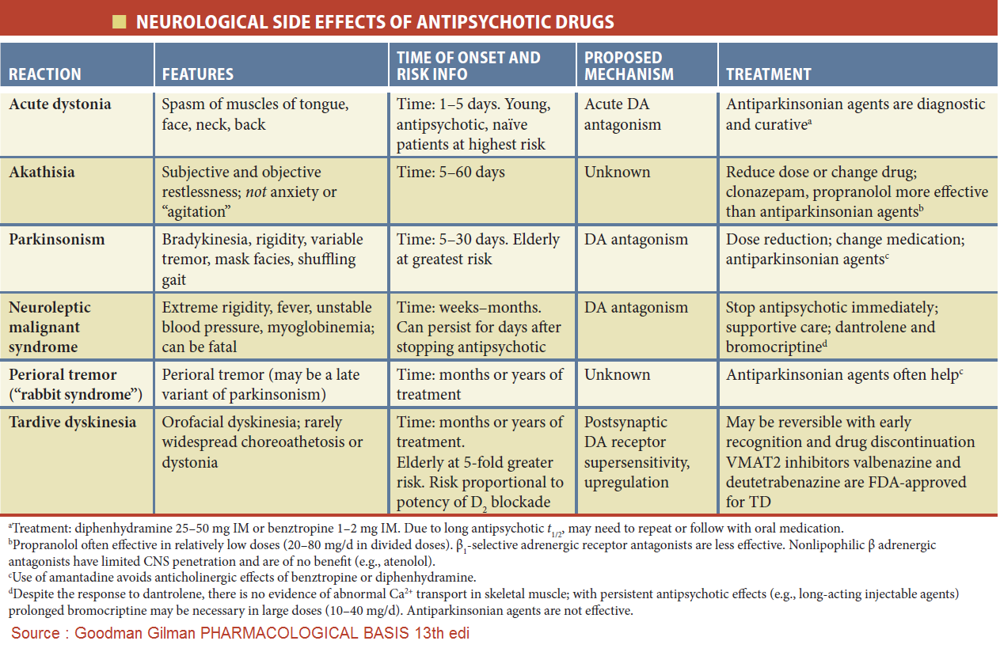
- Motor side effects of antipsychotics
- It is useful to look for:
- Parkinsonism: drug-induced signs are most commonly a reduced arm swing and unusually upright posture while walking. Tremor and rigidity are late signs, in contrast to idiopathic parkinsonism. (Video 1, 2,). (Video 3 - parkinsons gait) (Video 4 - tongue tremors) (Video 5 - rabbit syndrome)
- Acute dystonia: involuntary sustained muscular contractions or spasms. (Video 1, 2 )
- Akathisia: subjective feeling of inner restlessness and muscular discomfort. (Video 1)
- Tardive dyskinesia: rhythmic, involuntary movements of head, limbs and trunk, especially chewing, grimacing of mouth and protruding, darting movements of tongue. (Video 1,2)
- Neuroleptic Malignant Syndrome: s a life-threatening neurologic emergency associated with the use of antipsychotic (neuroleptic) agents and characterized by a distinctive clinical syndrome of mental status change, rigidity, fever, and dysautonomia. (picmonic 1 ) (Video of lead pipe rigidity 1)
- Motor side effects of other medications
- Drug induced tremors - example Lithium, Valproate. (Video 1)
- Serotonin syndrome - Overdose of SRIs causes CNS abnormalities (sedation, agitation, delirium), peripheral alterations (tremor, hyperreflexia, rigidity), cardiovascular changes (tachycardia, bradycardia), nausea or vomiting. (picmonic 1)
- Tics / Tourette's syndrome - Video 1, 2
- Social behaviour / Attitude
- Cooperative
- Bizarre, aggressive or suspicious
- Guarded, ignorant
- Over friendly
- Rapport
- The level of eye contact and the degree of rapport established should also be recorded. A positive rapport aids the formation of a constructive, therapeutic doctor-patient relationship. A negative rapport may occur, for example, in the case of patients admitted compulsorily against their will, and in some personality disorders.
7.2 Speech
Assess the amount, rate, volume and tone of speech.
|
Aspect and type |
Further information |
|
Amount and spontaneity |
|
|
Logorrhea |
Increased amount of speech (e.g. mania, anxiety, substance abuse) |
|
Poverty of speech |
Decreased amount of speech (e.g. depression, chronic schizophrenia) |
|
Rate |
|
|
Pressure of speech |
Speech is increased in amount and rate and may be difficult to interrupt (e.g. mania, anxiety) |
|
Speech retardation |
Speech is decreased in amount and rate (e.g. depression, chronic schizophrenia) |
|
Mutism |
A lack of speech, for which there is no physical explanation |
|
Volume |
|
|
Speech volume |
For example, can be reduced in depression, or increased in mania |
|
Tone |
|
|
Speech tone |
For example, monotonal in depression or parkinsonism |
Other abnormalities that may be seen
- Dysarthria - This is difficulty in the articulation of speech.
- Dysprosody - This is the loss of the normal melody of speech.
- Stammering - Pauses and the repetition of parts of words break the flow of speech.
Videos
Logorrhea and Pressure of speech - Video 1
Poverty of speech and Speech Retardation - Video 1
7.3 Mood and Affect
Mood is the sustained and pervasive internal emotional tone, that colors the perception of the external environment. (Subjective)
Asking about mood: "How has been your mood of lately?"; record the patients response verbatim.
Affect is the objective expression of the internal emotional tone, assessed through the body language, facial expressions and tone of voice. A common phrase is that affect is to mood as weather is to climate. In other words, affect is an observable behavior reflecting changing emotions (e.g. joy or sadness); mood is a sustained emotional state (e.g. elation or depression).
|
|

Affect can be described in 2 parts - quality and quantity
The following descriptors are commonly used to describe quality of observed mood
- Euthymic - normal
- Depression, Anxious, Irritable - self explanatory
- Elated - Marked happiness (e.g. normal happiness, mania)
- Euphoric - Undue, exaggerated happiness (e.g. mania, organic brain lesions)
- Ecstatic - A subjective experience of the patient and the universe being one (e.g. normla, mania, schizophrenia, organic disorders)
- Apathetic - an absence of feeling (e.g. Schizophrenia)
- Perplexed - Bafflement (e.g. schizophrenia)
The quantitative aspects of mood (range, appropriateness and stability) can be described using the following descriptors
- Reactive - Normal reactions to the emotional content of the discussion (e.g. smiling when speaking about pleasurable topics)
- Expansive - Lacking restraint with emotional expression (e.g. mania, video 1 around 2:15)
- Restricted - Mildly reduced range and intensity of emotional expression (video 1)
- Blunted/flattening (usually used interchangeably) - Marked reduction/lack of range and intensity of emotional expression (e.g. schizophrenia, depression, organic brain disorders) (video 1)
- Incongruous affect - e.g. schizophrenic patient who reports feeling suicidal with a happy facial expression.
- Labile mood - refers to a fluctuating mood state, e.g. that in mania (from elated to euthymic) or delirium.
7.4 Thought
Abnormalities of thought can be described under 3 major subheadings - stream, form and content.
Abnormalities of stream
|
Type |
Description |
|
Pressure of thought |
A high variety of thoughts rapidly arise and pass through the mind, causing pressure of speech (e.g. mania, schizophrenia) |
|
Retardation (or poverty) of thoughts |
The opposite of pressure of thought, resulting in poverty of speech (e.g. depression, schizophrenia) |
|
Thought block |
A sudden loss of train of thought. The experience is more profound that the normal experience of the "mind going blank" in anxiety (e.g. schizophrenia) |
|
Verbal perseveration |
The repetition of the same reply (thought) to different questions (e.g. dementia) |
Abnormalities of Form
|
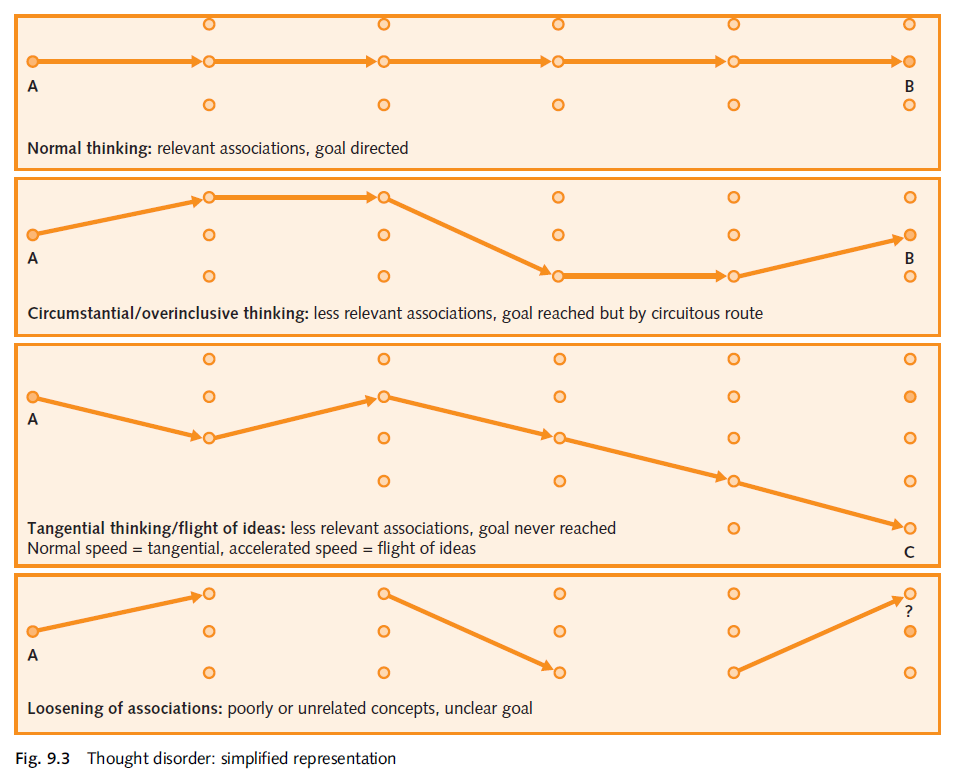 |
|
Type |
Description |
|
Circumstantiality |
Excessive details delay reaching the eventually achieved goal of speech. (Over inclusive thinking) |
|
Tangentialty |
Answers process at a barely related tangent to the question asked |
|
Flights of ideas |
Thoughts jump rapidly from one idea to another, with only vague association such as clanging, rhyming or punning. (e.g. mania) |
|
Clang association |
Successive words are linked by sound rather than meaning, this may be the manifestation of flight of ideas |
|
Loosening of associations |
Thoughts jump from one idea to another idea with no apparent connection. This results in muddled speech (e.g. schizophrenia). Detailment and word salad are examples of loosening. |
|
Derailment / Knight's move thinking |
Speech switches abruptly from one to another, unrelated topic |
|
Word salad |
All association between words is lost. |
|
Echolalia |
Senseless parrot like imitation of others speech |
|
Neologism |
The use of a new word. |
|
Metonym |
The use of an existing word with a new meaning attached |
Video of loosening of association - 1, around 2:43
Abnormalities of Content
- Preoccupations: Strongly held beliefs which are particularly important in four disorders: depressive, anxiety, eating and sexual. Preoccupations differ from obsessions in that they can be put out of the mind with effort, whereas obsessions repeatedly enter the patient’s mind despite their attempted resistance.
- Ruminations: Repetitive internal debates
- Obsessions: Distressing thoughts that enter the mind despite the patient’s effort to resist them. This is a feature of obsessive–compulsive disorder.
- Asking about Obsessions
- ‘Do certain ideas or images keep entering your mind, even when you try to keep them out?’
- Phobias: fear of a specific situation or object
- Asking about Phobias
- ‘Do you have any particular fears or phobias?’
- Overvalued idea: a single atypical but acceptable belief, firmly held but not fixed (cf. a fixed delusion or subjectively senseless obsession), that dominates the person’s life.
- Delusion: a fixed and false belief that is held in the face of evidence to the contrary, not explained by culture or religion. The process by which the belief is reached is illogical. Examples of delusional themes are shown in Table below. (video 1, 2)
Delusional themes
|
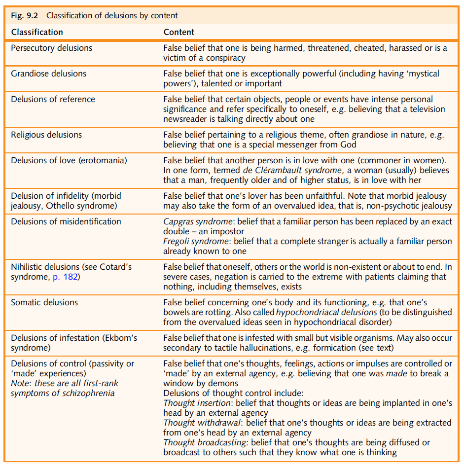 |
some descriptors used to further describe delusions
|
Primary delusion |
A new, fully formed delusional idea arising "out of the blue", with no origin in existing psychopathology or link to previous ideas and events. It may. however. follow delusional mood, or delusional perception |
|
Secondary delusion |
A delusion that is secondary to other psychopathology (e.g. a mood disorder, auditory hallucinations, other delusions) |
|
Systematized delusions |
A group of delusions based around a shared theme, or a number of elaborations of one delusion |
|
Delusional mood |
A period during which the affected person feels that the world seems somehow different. strange or sinister, but he cannot tell why. The sudden emergence of a primary delusion or delusional perception during this time provides a relieving explanation (e.g. a patient suddenly realizes that she is Joan of Arc, explaining her recent vague sense of being persecuted) |
|
Delusional perception |
A (primary) delusional meaning is given to a normal perception (e.g. I saw a red telephone box and immediately knew that the aliens had been behind this plot to incarcerate me) |
|
Delusional misinterpretation |
A patient gives a new meaning to a percept in order to align it with their pre-existing delusional belief (e.g. a person with persecutory delusions attributes static in a telephone to CIA listening in) |
Asking about delusions
It is sometimes useful to begin by stating that you need to ask some routine questions, which ‘may seem a little odd’:
- ‘I would like to ask you some questions that might seem a little bit strange. These are questions that we ask to everyone who come to see us.’
- ‘Do you have any beliefs that other people find strange?’
- ‘Do you have any thoughts that other people don’t share?’
Specific questions to identify delusions more common in schizophrenia are shown in Table below:
|
Symptom |
Question |
|
Delusion of persecution |
"Does it feel that someone is trying to harm you?" |
|
Delusions of reference |
"Do people seem to be talking about you?" ‘Do you ever think that the TV or radio send special messages directed specifically at you? |
|
Delusions of control, influence or passivity |
"Is someone or something controlling you?" "Is someone or something controlling your feelings/actions/sensation?" "Has it ever felt that you movements/feelings/sensation are not yours?" |
|
Thought insertion or withdrawal, and thought broadcasting |
‘Do you feel as if something or someone is putting thoughts into your head?’ (thought insertion); ‘Do you feel as if there are people accessing and removing your thoughts?’ (thought withdrawal); ‘Do you feel as if someone or something is causing your thoughts to be heard out loud by others?’ (thought broadcast ). |
Specific questions to identify mood-congruent delusions seen more commonly in mood disorders:
|
Symptom |
Question |
|
Delusion of grandiosity |
‘Do you have any special powers or abilities that others don’ t have?’ |
|
Delusions of guilt |
‘Do you feel like you deserve punishment for mistakes you made in the past? Can you tell me the nature of the mistakes and punishment you deserve?’ |
|
Delusions of nihilism |
‘Do you feel like you no longer exist/the world no longer exists/the world is about to cease to exist? |
Checking conviction of delusional beliefs
- ‘Are you 100% sure these thoughts are true?’
- ‘Have you talked about your thoughts to others? What has been their reaction? How do you feel about that?’
- Suicidal ideations
Asking for suicidal ideations
It sounds as though things have been very difficult for you recently, have they ever been so bad that.......'
' ......you feel life is not worth living?
' Do you have thoughts that you do not wake in the morning? '
' Do you have thoughts of harming self? '
' Have you thought of ending it all? '
' Can you tell me about the suicidal thoughts? '
' What methods have you considered? '
' Have you made a plan? '
'What prevents you from acting on your plan?'
7.5 Perception
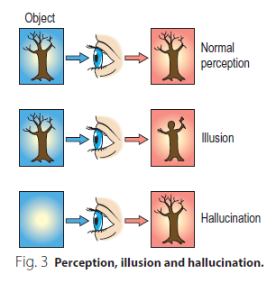
- Illusion - false perception of a real stimulus. They often occur in healthy people. Types include:
- Pareidolic illusion: formed images arise from equivocal stimuli, e.g. seeing a face in a cloud
- Completion illusion: inattention leads to perceiving incomplete objects as complete, e.g. FIAT seen as FLAT
- Affect illusion: caused by the current emotional state, e.g. a scared person walking down a dark road sees a figure in a hedge
- Hallucinations - perception without a stimulus.
Hallucinations can be classified as shown below:
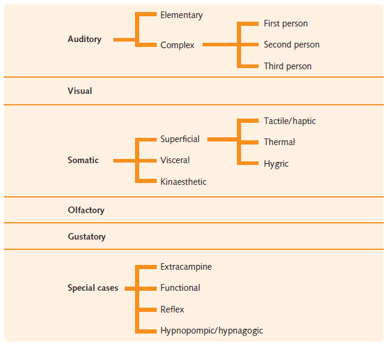
Video on Auditory hallucinations 1.
Asking about auditory hallucinations
It may be helpful to start by saying: ‘Stress can play tricks on people’s imagination, such as causing them to hear voices when there is no one else there. Has this ever happened to you?’
- noises or voices - ‘Are these noises or voices?’
- where it comes from (coming from some part of the body or from outside the head) - ‘Are these voices/noises in your mind or can you hear them through your ears?’
- if voices
- clear or whispering - ‘And are they whispering or clearly audible?’
- who it belongs to - male / female / how many etc.
- what it says - ‘What do the voices say?’
- its nature (a running commentary, discussion about the patient, thought echo)
- 'Do you hear several voices talking about you?’ [Third person]
- 'Do they speak directly to you?’ ‘Can you carry out a conversation with them?’ [Second person]
- ‘Do they make comments on what you are thinking or doing?’ [Running commentary]
- 'Do they give any orders?’ [Commanding]
- ‘Do you ever hear your own thoughts echoed after you think them?’ [thought echo/first person]
- the patient’s view on the hallucination; i.e. their insight into the hallucination - 'Do you think these are real or is your mind playing tricks with you?'
- the effect on the patient; is it distressing, can any commands be ignored?
- frequency
- duration
Descriptors of auditory hallucinations
|
Simple (or elementary) hallucinations |
Simple sounds such as a bang, or simple flashes of light |
|
Complex hallucinations |
Complex sounds such as music/voices, or complex images of objects/people |
|
Third person |
Third person: voices discuss the patient |
|
Running commentary / second person |
Voices comment on the patient’s thoughts or actions. They can also issues commands to be patient in which case command hallucinations are also described |
|
Thought echo / first person |
The patient’s thoughts are heard spoken aloud |
Asking about other hallucinations
Other modalities Hallucinations in other modalities should be asked about:
- ‘Have you ever seen anything unusual?’ (visual)
- ‘Have you ever experienced a strange taste/smell without anything to cause it?’ (olfactory/gustatory)
- ‘Have you ever had any strange sensations even though there seemed to be nothing to cause it?’ (tactile)
Few points about other modality hallucinations
|
Modality |
Description |
Associated conditions |
|
Visual hallucinations |
|
Organic illness; uncommon in primary psychiatric conditions |
|
Lilliputian hallucinations |
Images of small animals or people etc. |
Delirium tremens |
|
Charles bonnet syndrome |
Simple or complex hallucinations |
Significant loss of vision |
|
Autoscopic hallucinations |
Images of oneself, seen by the person while "remaining" in their own body (cf. out of body experience) |
|
|
Olfactory (smell) hallucinations |
Not common, usually unpleasant, e.g. burning rubber |
Organic conditions (e.g. temporal lobe epilepsy) and psychiatric conditions |
|
Gustatory (taste) hallucinations |
Not common, usually unpleasant, e,g, bitter |
Organic conditions (e.g. temporal lobe epilepsy) and psychiatric conditions |
|
Somatic hallucinations |
Bodily sensations e.g. touch/haptic, pain, proprioception, temperature |
Schizophrenia (may be incorporated in to complex delusional system e.g. the sensation of being touched lends further evidence to persecution by another person) |
|
Formication |
Haptic hallucinations of insects crawling on or under the skin |
Alcohol withdrawal Cocaine bugs |
Special types of hallucinations
|
Functional hallucinations |
Hallucinations triggered by simultaneous external stimulation of same modality e.g. hallucinatory voices heard when the toilet is heard flushing |
|
Reflex hallucinations |
Hallucinations triggered by a simultaneous external stimulus in a different modality e.g. a visual hallucination seen when a door is heard creaking |
|
Synaesthesia (non-hallucinatory form or reflex hallucinations) |
Stimuli in one modality lead to sensations in another e.g. experiencing a song as a stream of colours; can occur in absence of illness. |
|
Extracampine hallucinations |
Hallucinations perceived as from outside the limits of the sensory field, e.g. hearing astronauts speaking on the moon |
|
Hypnogogic and hypnopompic hallucinations |
Occur around sleep: a hypnogogic hallucination occurs when going to sleep, whereas a hypnopompic hallucination occurs on waking up. They can be: - visual, auditory or tactile in nature - normal; they can also occur in a variety of disorders, including delirium, schizophrenia and narcolepsy |
|
Pseudo-hallucinations |
Less vivid and perceived to arise from the mind (i.e. the person has insight). |
7.6 Cognition
A brief test of cognition may involve the following:
- orientation: to time, place and person (themselves)
- attention and concentration - digit span, forward and backwards
- memory - immediate by 3 word retention, recent by recall of 3 words after 5 minutes, remote by asking personal information
- calculations - serial 7s
- abstraction - proverb testing
Assessing cognition
Orientation is checked with direct questions: “O.K., now I'd like you to tell me what's the time now", with the pt's response followed by, “And now I'd like you to tell me the name of the building we're in now,” followed by, “and the name of accompanying relative.”
I'm going to check on memory by giving you 3 words to remember, because in a few minutes I'll ask you to recall them, O.K.? The 3 words are ‘sparrow, cap, watch.’ Say those once so I know you have them, O.K.?” Assuming the pt has them, check your watch and plan to return to this in 5 minutes. In the meantime, proceed with the rest of the cognitive portion.
Proceed to the digit span tests, both forward and backward.
Next come calculations. Depending on your estimate of the pt's intelligence, based on vocabulary and evidence of abstract thought earlier in the interview, you may start with serial 7s. Introduce serial 7s with, “If you take 7 away from 100, what do you have?” After the pt responds, follow up with, “Now take 7 away from that number and keep on subtracting 7 each time until you can't go any further.”
Proverbs testing is introduced with a statement like, “Now I'm going to mention an old saying, and I'd like you to tell me what it means to you,
in your own words. There's no right or wrong answer? So, ‘Don't cry over spilled milk.’ What does that mean to you?”
When 5 minutes has passed, ask, “Now I'd like you to recall those 3 words I have you a few minutes ago. What were they?”
In clinical practice it is useful to do the MMSE, Mini Mental Status Examination to quickly assess screen cognitive function.The mini-mental state examination may produce false-positive results in various cultural groups and those with low education or intelligence. Conversely, it may not reveal subtle cognitive impairment, especially in intelligent or well-educated patients.
7.7 Insight and Judgement
Insight is the degree of understanding that a person has of their illness and its impact. It exists on a spectrum, rather than just being present or not.
‘Poor insight’ is characteristic of certain mental disorders, including mania, schizophrenia and dementia.
Assessing Insight
Determine whether the patient believes that they are unwell by asking, for example:
- Do you think there is anything wrong with you?
- Why did you come to hospital?
If the patient does feel that they are unwell, assess their understanding or belief of what their illness is:
- What do you think is wrong with you?
- What do you think the cause of it is?
- Do you think you need treatment?
- Would you accept treatment?
Insight is rated on a 6-point scale from one to six.
1. Complete denial of illness.
2. Slight awareness of being sick and needing help, but denying it at the same time.
3. Awareness of being sick, but it is attributed to external or physical factors.
4. Awareness of being sick, due to something unknown in self.
5. Intellectual Insight: Awareness of being ill and that the symptoms/failures in social adjustment are due to own particular irrational feelings/thoughts; yet does not apply this knowledge to the current/future experiences.
6. True Emotional Insight: It is different from intellectual insight in that the awareness leads to significant basic changes in the future behaviour.
Judgment is the ability to assess a situation correctly and act appropriately within that situation. Both social and test judgment are assessed.
i. Social judgment is observed during the hospital stay and during the interview session. It includes an evaluation of ‘personal judgment’.
ii. Test judgment is assessed by asking the patient what he would do in certain test situations, such as ‘a house on fire’, or ‘a man lying on the road’, or ‘a sealed, stamped, addressed envelope lying on a street’.
Judgment is rated as Good/Intact/Normal or Poor/Impaired/Abnormal
8. Self directed learning and review for Mental Status examination
1. ADMSEP self directed learning module on "Mental Status Exam" Link
2. NIMHANS digital academy Mental Status Exam Part - 1 (10:17min)
3. NIMHANS digital academy Mental Status Exam Part - 2 (06:13min)
4. NIMHANS digital academy Mental Status Exam Part - 3 (13:43min)
Bibliography
1. Crash course in Psychiatry 5e.
2. First Aid to the Psychiatry Clerkship 5e.
3. Psychiatry by Neel Burton 2e.
4. Memorable Psychiatry 1e.
5. Short textbook of Psychiatry 7e.
5. ADMSEP e-modules.
6. NIMHANS digital academy videos.
7. Synopsis of Psychiatry 10e.
8. Psychiatry - PRN 1e.
9. Getting Started in Psychiatry: A guide for junior registrars
10. Psychiatry Algorithms for Primary Care 1e.
11. Psychiatry A Clinical Handbook 1e.
12. Little Black Book of Psychiatry 1e.
13. Psychiatry Illustrated 2e.
14. Pocket Tutor Psychiatry.
15. Pocket essentials of Psychiatry.
16. Portico network - Psychiatry in primary care toolkit
Created with the Personal Edition of HelpNDoc: Create help files for the Qt Help Framework